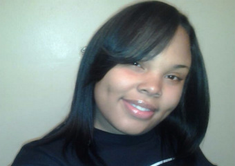

Bhagat Rizal
I am an individual who is passionate about learning skills in a broad areas. I am currently pursuing my interest in Information Technology at Year Up.Year Up is a non-profit organization committed to provide urban young adults with essential skills, experience, and support that will help them reach their full potential through professional careers and higher education. As I have deep interest in web development, I see myself creating beautiful websites in near future, or potentially working as a web developer. In addition, Year Up provided me a scholarship to a Front End Web Development Nanodegree course at Udacity which primarily focuses on advance skills of HTML,CSS and JavaScript.

Olivette Murphy
Born and raised on Chicago’s south side is a 25 year old self-motivated individual, striving to be a part of the opportunity divide. Olivette is a current student at Year Up Chicago which is a rigorous one year IT focused training program, Also a fairly new mother Olivette loves new challenges. Determine to be better than where she came from, Olivette’s main goal is to succeed, and in doing that she continues to add new skills to her skill set and continue her education. Upon graduating Year Up Olivette plans on furthering her education by re-enrolling into Kennedy king college where she plans on finishing her associates degree in general studies.

Brandon Craig
My name is Brandon Albert Craig and here is a little bit more about who I am and what are my ambitions. I'm twenty-five year old and I was born on May 16, 1990 and I am the oldest of two children. I grew up in the Roseland neighborhood in which I came up in a fatherless home with my mother, grandmother and my younger sister. I am a very focused individual that made bad choices in the past but I am in the right mindset and have the motivation to show that a very successful person can come from very high crime rated area without having a father figure in my life. I graduated from a charter high school called C.I.C.S. Longwood Academy and it has prepared me to dressed professional and to get in the right mindset of adulthood. After Longwood, I went to Robert Morris University and studied Computer Sciences while I was there, but unfortunately due to my grades being bad and my financial aid situation I was unable to attain my degree. So, I had to get a job working for Strack & Van Til in Indiana for two years and those were the hardest two years of my life because of me being the minority and the amount of work that was being thrown at me. I got the news that the store would be closing down and I was in a bind because I was unable to find a job after that. Then, I heard about the Year-Up program from a friend and it brought back the motivation, drive and determination to become the person that I should have been years ago. My future goals that I want to accomplish would to become a cyber security agent for the NSA. This work deals with hacking and security for the United States as a whole. This is my goal because it is a very rewarding field and it has room for advancement. Also, it can provide me the a career that I can enjoy doing rather than to go to a grocery store that I hated to go to. This is a basic sum up of who I am and what I want to become in life.